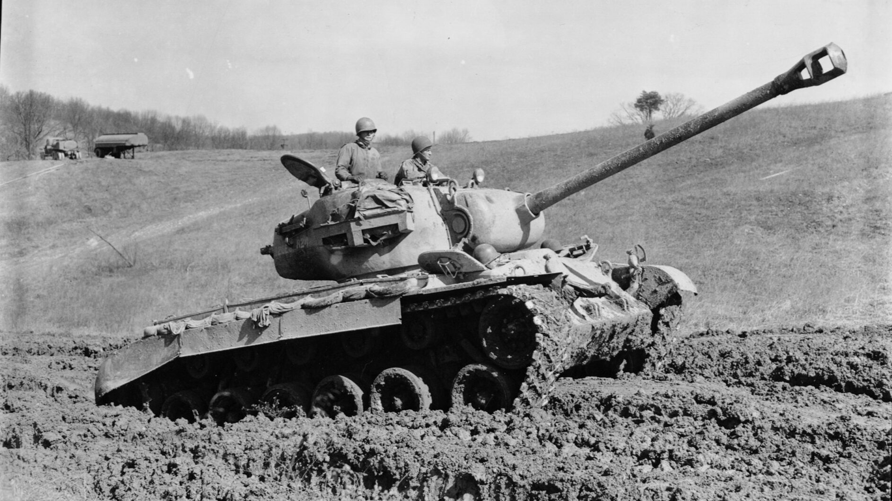

The M26 Pershing was an American heavy tank introduced late in World War II as a response to the German Tiger and Panther tanks. Named after General John J. Pershing, it represented a major leap forward in U.S. tank design, combining strong firepower, improved armor, and a lower profile. Development began in 1942, but production delays meant it only reached Europe in early 1945. The M26 saw limited combat in the final months of WWII, notably during the Battle of the Remagen Bridge and in the Cologne tank duel, where it proved effective against German armor. It later served in the Korean War, where it fought T-34/85s. The Pershing became the basis for America’s postwar M46, M47, and M48 Patton tank series, marking the transition to the modern main battle tank era.

- Characteristics:
- Type: Heavy tank
- Weight: 46 tons
- Crew: 5
- Armament: 90mm M3; 2 x .30 cal M1919; 1 x .50 cal M2 Browning
- Speed: 40 km/h